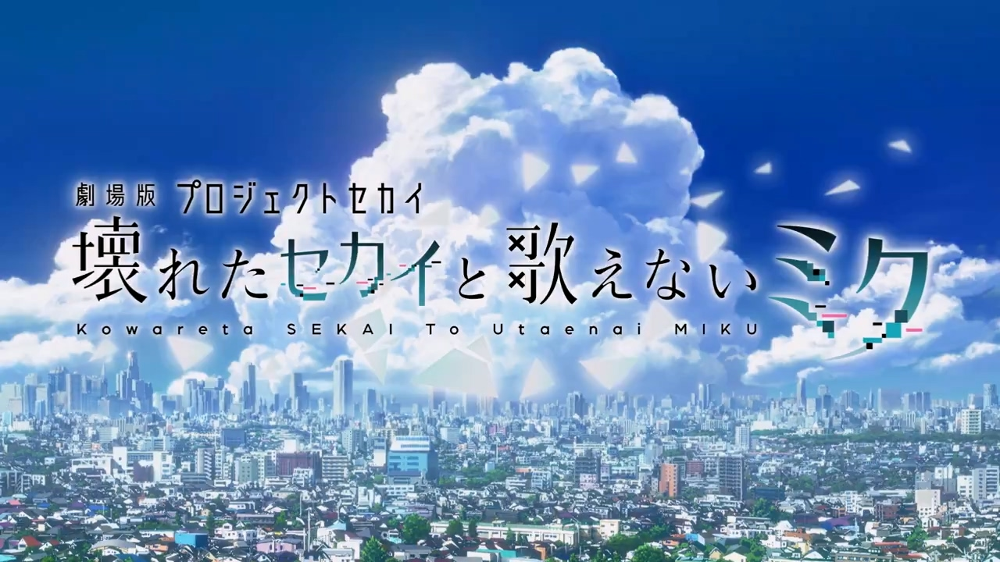

你好,欢迎来到“5xian-Site”
关于网站
本网站围绕初音未来主题进行编写
---别问我为什么网站不用#39c5bb色---
---因为我调用setColorScheme时总是报一些奇奇怪怪的错误XD---
网站信息
网站成立于:2024/7/31
网站所有者:5xian_39
组件库:MD-UI
有趣的网站
好听的音乐
好看的图片
精密的计划
建模
很高兴认识你！
关于我的信息
- Name:
Xia Yifan
- Age:
11
- Birthday:
8/31
- 外部链接:
- BiliBili:286975446
- Github:
wobushixia
- Name:
Xia Yifan - Age:
11 - Birthday:
8/31 - 外部链接:
- BiliBili:286975446
- Github:
wobushixia
"将你的故事告诉我吧"
『崩坏的SEKAI与无法歌唱的MIKU』
原作 セガ/ Colorful Palette / クリプトン・フューチャー・メディア
監督 畑 博之
脚本 米内山 陽子
キャラクターデザイン／総作画監督 秋山 有希
サブキャラクターデザイン／総作画監督 辻 雅俊
プロップ設定 牧野 博美
美術監督 鈴木 くるみ
美術設定 塩澤 良憲
撮影監督 岩井 和也
色彩設計 手嶋 明美
CGIディレクター 小川 喬右・鈴木 晴輝
編集 髙橋 歩
音響監督 明田川 仁
音響効果 上野 励
音響制作 マジックカプセル
音楽 宝野 聡史
アニメーション制作 P.A.WORKS
配給 松竹
製作 「劇場版プロジェクトセカイ 壊れたセカイと歌えないミク」製作委員会
世界计划多彩舞台 剧场版动画『崩坏的SEKAI与无法歌唱的MIKU』
目前的情报汇总
图2：动画制作由P.A.WORKS负责，监督畑博之，脚本米内山陽子（跃动青春、派对浪客诸葛孔明、赛马娘等），角色设计、作画监督秋山有希。
图3、4：动画介绍及本作的初音未来形象图公开。
图5：剧场幕间映像及特报映像将于8月2日起公开。
图6：后续情报将于9月27日的世界计划情报局中公开，预计9月公开新预告视频和其他角色形象图，12月公开影院现场特典和动画主题曲情报。
图7：动画主视觉图公开。